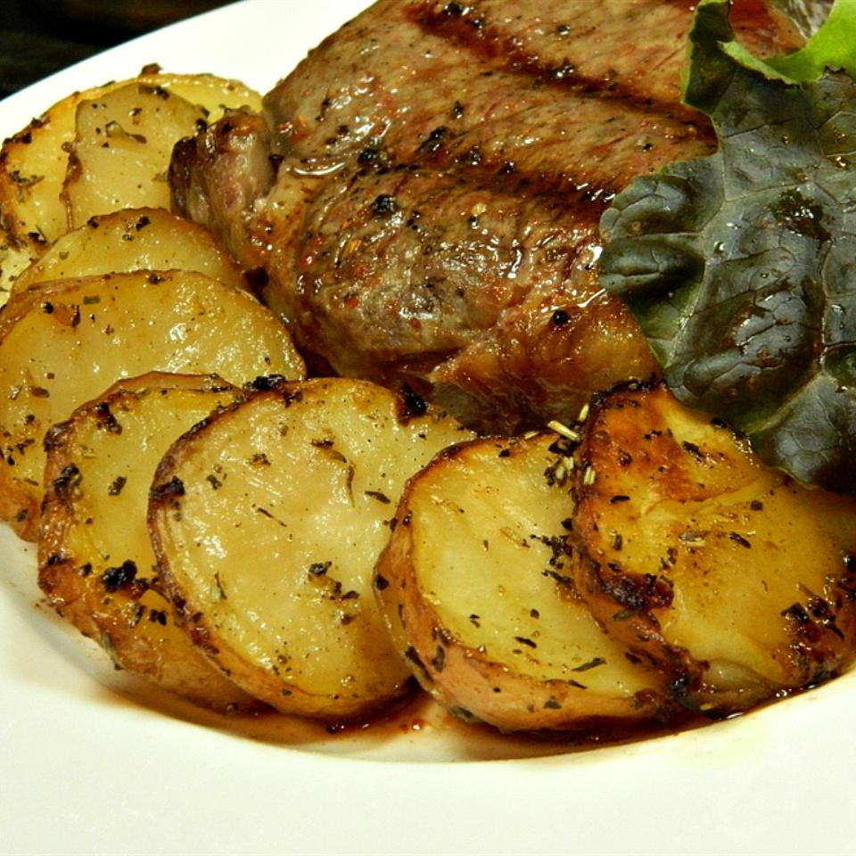

Oven-Roasted Greek Potatoes

The best potatoes
A delicious blend of potatoes, garlic, lemon, and herbs
marinated overnight in olive oil and white wine.
This is a nice way to dress up the potatoes and
is always a hit at my dinner parties.
Ingredients
- 2 teaspoons lemon pepper
- ½ teaspoon dried marjoram
- 1 teaspoon dried basil
- ⅛ teaspoon dried thyme
- 1 teaspoon dried rosemary
- ¼ cup white wine
- 1 cup water
- 2 tablespoons olive oil
- 2 tablespoons Italian salad dressing
- 2 cloves garlic, minced
- 1 lemon, juiced
- 1 tablespoon lemon zest
- 6 medium potatoes, peeled and quartered
Steps
- In a small bowl, mix the lemon pepper, marjoram, basil, thyme, and rosemary.
In a separate bowl, mix the wine, water, olive oil, dressing, garlic, lemon juice,
lemon zest, and 1/2 the seasoning mixture. Pour into a medium glass baking dish. Place potatoes in the dish,
coat with the mixture, and sprinkle with remaining seasonings. Cover, and refrigerate 8 hours, or overnight.
- Preheat oven to 350 degrees F (175 degrees C).
- Bake potatoes 1 hour and 15 minutes in the preheated oven, basting once half way through the bake time.
Nutrition Facts
Per Serving: 234 calories; protein 4.7g; carbohydrates 40.8g; fat 6.2g; sodium 249.3mg.
Return to main page